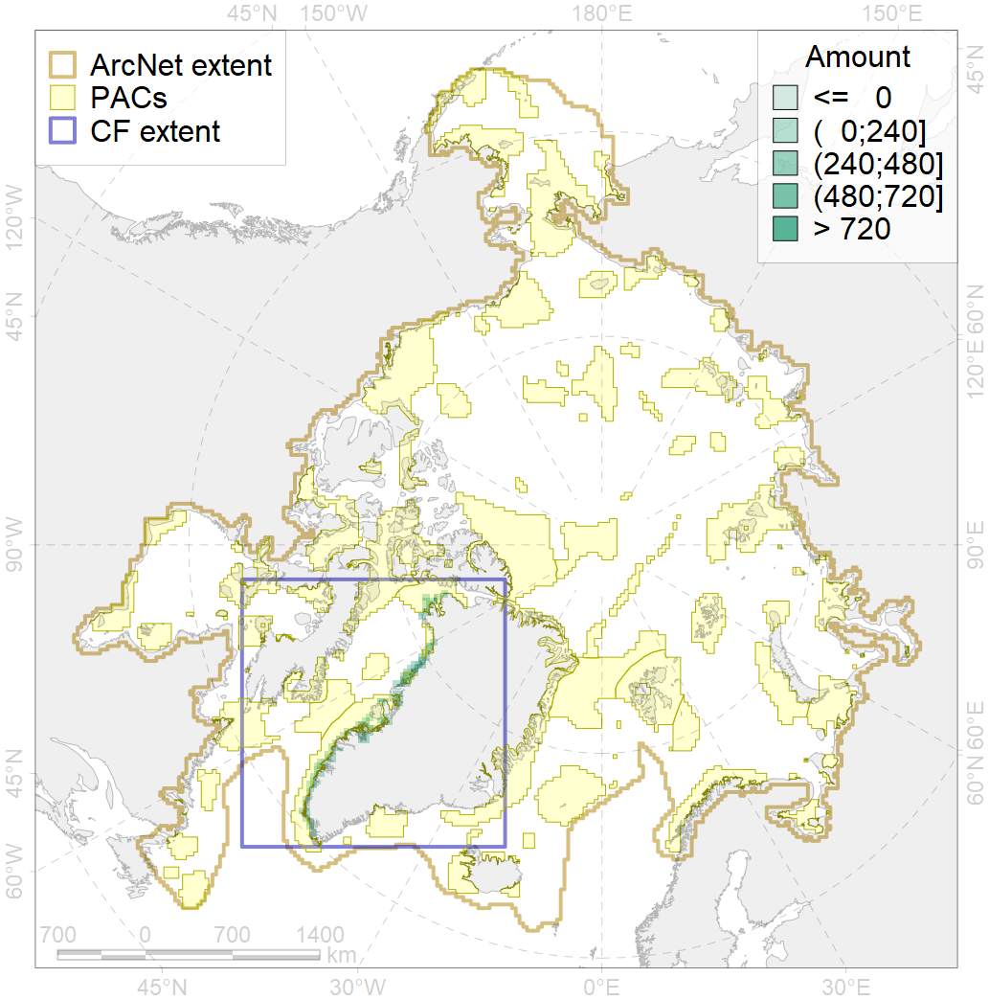
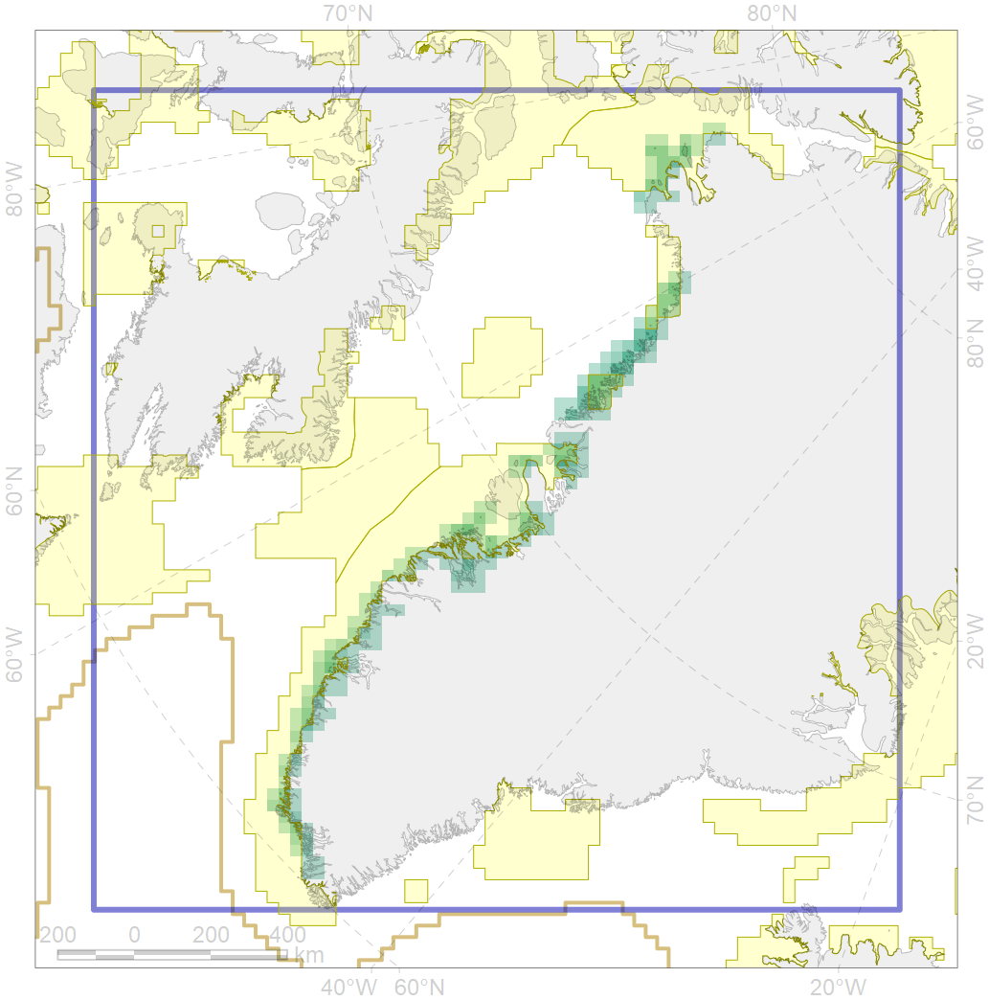

6058

| CF ID | 6058 |
| CF Name | Common eider (Somateria mollissima borealis) West Greenland breeding&moulting grounds |
| Time Period | 2015 |
| Source(s) | Christensen et al 2016 |
| Seasonality | June-August |
| Depth Horizon | <50 m |
| Methodology | Field Data |
| Author Name | Gavrilo, Tertitski |
| Notes | |
| Conservation Target Set in the Scenario | 0.672 |
| Conservation Target Achieved in the Scenario | 0.676 (Scenario: 100.6%) |
| PAC ID | Proportion in the PAC | Contribution to ArcNet Target Achievement | PAC’s Contribution to the Achieved Target |
|---|---|---|---|
| 44 | 43.7% | 57.6% | 57.3% |
| 48 | 9.3% | 10.0% | 10.0% |
| 49 | 7.4% | 9.0% | 8.9% |
| 51 | 11.7% | 16.8% | 16.7% |
| inner | 72.1% | 93.4% | 92.9% |
| outer | 27.9% | 7.2% | 7.1% |